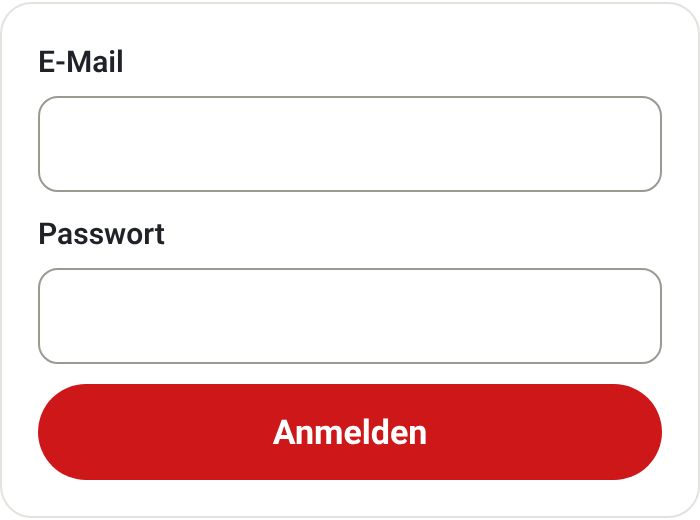
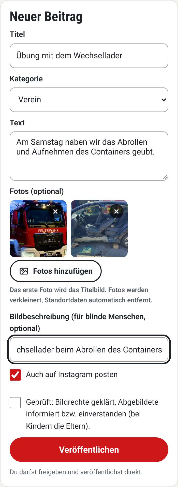
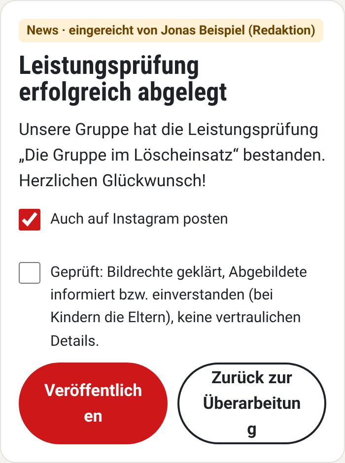
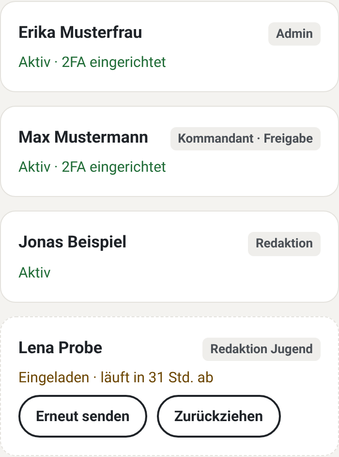
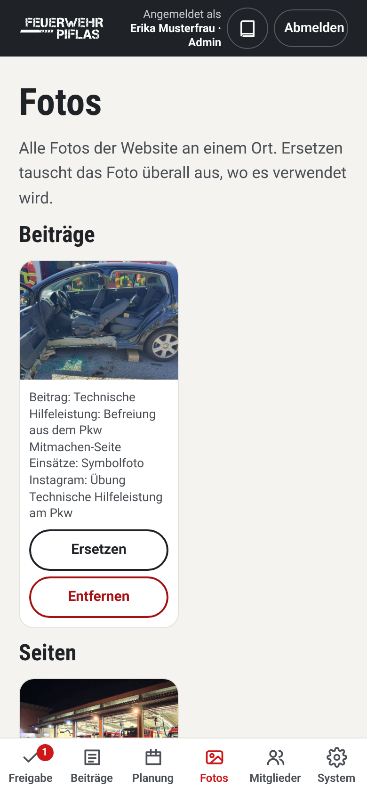
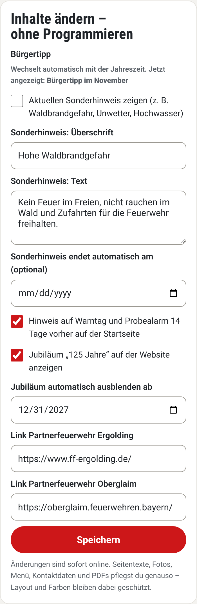

Dieses Handbuch erklärt Schritt für Schritt, wie du die Website der Feuerwehr Piflas als Mitglied mit Zugang pflegst. Du brauchst dafür keine IT-Kenntnisse – alles geht am Handy.
Das Wichtigste in drei Sätzen
Du bekommst deinen Zugang nur per Einladung von einem Admin. Selbst registrieren geht nicht.
Was du darfst, hängt von deiner Rolle ab (Kapitel 2). Du siehst unten im Mitgliederbereich nur die Bereiche, die du brauchst.
Vor jeder Veröffentlichung bestätigst du mit einem Häkchen, dass Fotos und Text in Ordnung sind (Kapitel 4.4).
Mitgliederbereich – nach dem Login. Oben steht, als wer du angemeldet bist, unten ist eine Leiste mit deinen Bereichen. Über das Logo oben links kommst du jederzeit zur öffentlichen Website, über „Handbuch“ zu diesem Dokument.
Mitgliederbereich als Admin: oben Name und Rolle, unten die Bereiche Freigabe, Beiträge, Planung, Fotos, Mitglieder und System.
Die Abbildungen stammen aus der Demo der Website. Auf der fertigen Seite können Texte und Farben leicht abweichen, die Abläufe bleiben gleich.
2. Die Rollen im Überblick
Jedes Konto hat genau eine Rolle. Die Admins vergeben und ändern sie.
Rolle
Für wen
Bereiche unten
Darf
Darf nicht
Admin
Webmaster/in und mindestens eine Vertretung
Freigabe, Beiträge, Planung, Fotos, Mitglieder, System
Alles: Mitglieder einladen und Rollen vergeben, alle Beiträge und Einsatzberichte bearbeiten, ausblenden und nach Nachfrage löschen, alle Fotos ersetzen oder entfernen, Einstellungen, Schnittstellen
Beiträge und Einsatzberichte prüfen und veröffentlichen, eigene Beiträge direkt veröffentlichen, alle Beiträge und Einsatzberichte bearbeiten und ausblenden, Instagram-Post auslösen
Löschen, Mitglieder verwalten, Einstellungen ändern
Redaktion
Pressearbeit, engagierte Aktive
Beiträge, Planung
Beiträge mit Fotos schreiben und zur Freigabe einreichen, eigene Beiträge bearbeiten (Änderung geht zur Freigabe) und ausblenden, Themen einplanen
Selbst veröffentlichen, fremde Beiträge ändern, löschen
Bereichsredaktion
z. B. Jugendwart
Beiträge, Planung
Im eigenen Bereich (z. B. Jugendfeuerwehr) schreiben, veröffentlichen, bearbeiten und ausblenden
Andere Bereiche, Einsatzberichte
Eingeladen
Einladung noch nicht angenommen
–
–
Noch kein Zugang
Wer macht was? Die Kapitel sind markiert: AlleKommandantAdmin
3. Anmelden Alle
3.1 Einladung annehmen (einmalig)
Du bekommst eine E-Mail „Einladung zur Website der Feuerwehr Piflas“. Der Link darin gilt 48 Stunden und nur einmal.
Tippe auf den Link und lege dein eigenes Passwort fest – ein sicheres, das du nirgends sonst verwendest (am besten im Passwort-Manager speichern).
Richte die 2-Faktor-Anmeldung ein: Authenticator-App (z. B. die App deines Handys) öffnen und den angezeigten QR-Code scannen. Für Admins und den Kommandanten ist das Pflicht.
Fertig – du landest im Mitgliederbereich.
Link abgelaufen? Kein Problem: Bitte einen Admin, die Einladung erneut zu senden.
3.2 Anmelden
Auf der Website ganz unten auf „Login für Mitglieder“ tippen (oder im Menü).
E-Mail und Passwort eingeben, „Anmelden“.
Den 6-stelligen Code aus deiner Authenticator-App eingeben, „Bestätigen“.

3.3 Passwort vergessen, abmelden
Passwort vergessen: Auf der Login-Seite „Passwort vergessen“ wählen. Du bekommst einen Link per E-Mail.
Mehrmals falsch eingegeben: Das Konto wird kurz gesperrt. Ein paar Minuten warten oder einen Admin fragen.
Abmelden: Oben rechts auf „Abmelden“. Bitte immer abmelden, wenn du ein fremdes Gerät benutzt.
Handy verloren? Sofort einen Admin informieren – das Konto wird gesperrt und die 2-Faktor-Anmeldung zurückgesetzt.
4. Beitrag schreiben Alle
4.1 Schritt für Schritt
Unten auf „Beiträge“ tippen.
Titel eingeben – kurz und konkret, z. B. „Übung mit dem Wechsellader“.
Kategorie wählen: Verein, Übung, Jugendfeuerwehr oder Bürgertipp.
Text schreiben: Wer, was, wann – ein paar Sätze reichen. Immer in Du-Form und einfacher Sprache.
„Fotos hinzufügen“ antippen und Fotos aus Kamera oder Galerie wählen (Kapitel 4.2).
Optional eine Bildbeschreibung eingeben – sie hilft blinden Menschen, z. B. „Wechsellader beim Abrollen des Containers“.
„Auch auf Instagram posten“ an- oder abhaken.
Das Häkchen „Geprüft: …“ setzen (Kapitel 4.4).
In der Rolle Redaktion: „Zur Freigabe einreichen“. Kommandant und Admins: „Veröffentlichen“.

Neuer Beitrag mit zwei Fotos
4.2 Fotos
Du kannst mehrere Fotos auswählen. Das erste Foto wird das Titelbild, die weiteren erscheinen als Galerie unter dem Text.
Ein falsches Foto entfernst du vor dem Absenden mit dem × oben rechts am Vorschaubild.
Die Website verkleinert Fotos automatisch und entfernt Standort- und Kameradaten. Du musst nichts vorbereiten.
Nur Bilddateien sind erlaubt – Fotos direkt vom Handy funktionieren.
Was darf auf ein Foto – und was nicht?
✓ Erlaubt
Übungen, Ausbildung, Fahrzeuge, Gerätehaus
Feste und Vereinsleben (alle Anwesenden wurden informiert, z. B. per Aushang)
Einsatzstellen nur von weitem und ohne Erkennbares
✗ Nicht erlaubt
Erkennbare Verletzte, Betroffene oder Schaulustige
Wenn jemand nicht abgebildet sein möchte, wird das Foto entfernt – ohne Diskussion.
4.3 Nach dem Speichern
Die Website springt direkt zu deinem Beitrag:
Kommandant und Admins sehen den Beitrag so, wie ihn alle auf der Website sehen – er ist sofort online.
In der Rolle Redaktion siehst du eine Vorschau mit dem Hinweis „Vorschau – noch nicht öffentlich“. Der Beitrag erscheint, sobald der Kommandant ihn freigibt. Er bekommt automatisch eine Nachricht.
Mit „Zur Redaktion“ kommst du zurück in den Mitgliederbereich.
Vorschau in der Rolle Redaktion
4.4 Das Häkchen „Geprüft“
Ohne dieses Häkchen lässt sich nichts veröffentlichen oder einreichen. Damit bestätigst du:
Die Bildrechte sind geklärt (eigene Fotos oder schriftliche Erlaubnis).
Abgebildete Personen sind informiert bzw. einverstanden – bei Kindern die Eltern.
Der Text enthält keine vertraulichen Details (Namen von Betroffenen, Adressen, Verletzungen).
Im Zweifel: Häkchen nicht setzen und den Kommandanten fragen. Veröffentlichtes lässt sich nicht mehr ganz zurückholen.
4.5 Bearbeiten, ausblenden, löschen
Unter „Beiträge“ steht unter dem Formular die Liste „Beiträge verwalten“ (in der Rolle Redaktion: „Deine Beiträge“). Kommandant und Admins sehen darunter auch „Einsätze verwalten“, Admins zusätzlich den „Papierkorb“. Mit den Knöpfen ganz oben auf der Seite springst du direkt dorthin.
Bei Einsätzen ändert „Bearbeiten“ nur den Kurzbericht. Einsatzart, Ort, Zeit und Fahrzeuge kommen aus DIVERA.
Knopf
Was passiert
Wer darf
Bearbeiten
Der Beitrag öffnet sich im Formular, mit Text und Fotos. Ändern, Häkchen „Geprüft“ setzen, speichern. Instagram wird nicht erneut gepostet.
Redaktion: eigene Beiträge – die Änderung geht zur Freigabe, bis dahin bleibt die alte Fassung online. Kommandant und Admins: alle, sofort online.
Ausblenden
Der Beitrag ist sofort nicht mehr öffentlich, bleibt aber gespeichert. „Wieder einblenden“ macht ihn wieder sichtbar.
Wie Bearbeiten, ohne Freigabe
Löschen
Erst kommt eine Nachfrage. Nach „Ja, löschen“ landet der Beitrag im Papierkorb. 30 Tage lang lässt er sich wiederherstellen, danach ist er endgültig weg.
Nur Admins
Lieber ausblenden als löschen: Ausgeblendetes lässt sich jederzeit zurückholen. Ein Post auf Instagram bleibt in beiden Fällen bestehen – den löschst du direkt in Instagram.
Ein Beitrag in der Liste „Beiträge verwalten“Nachfrage vor dem Löschen (Admin)
5. Redaktionsplan Alle
Ziel: ein Beitrag pro Woche – auf der Website oder auf Instagram. Der Redaktionsplan zeigt, wer wann was schreibt.
Unten auf „Planung“ tippen.
Unter „Thema einplanen“ Thema, Datum und die zuständige Person eintragen.
„Einplanen“ tippen.
Die zuständige Person bekommt 3 Tage vorher eine Erinnerung per E-Mail. Wenn 14 Tage nichts veröffentlicht wurde, bekommt der Kommandant einen Hinweis.
Ideen für Themen: Übungsbericht, Gerät im Fokus, Mitglied im Porträt, Jugendfeuerwehr, Bürgertipp, Rückblick auf ein Fest.
6. Freigeben KommandantAdmin
Unter „Freigabe“ (unten links, mit Zahl der offenen Einträge) findest du alles, was auf dich wartet: eingereichte Beiträge der Redaktion und neue Einsatzberichte aus DIVERA.
6.1 Beitrag der Redaktion freigeben
Beitrag lesen und Fotos ansehen.
Entscheiden, ob er auch auf Instagram erscheinen soll (Häkchen).
Prüfen und das Häkchen „Geprüft: …“ setzen.
„Veröffentlichen“ – fertig. Oder „Zurück zur Überarbeitung“, wenn etwas geändert werden muss; schreib kurz dazu, was.

6.2 Einsatzbericht freigeben
Nach jedem Alarm legt die Website automatisch einen Entwurf an. Er enthält nur Einsatzart, Ortsteil, gerundete Uhrzeit und Fahrzeuge – keine Adressen, keine Namen.
Optional einen Kurzbericht ergänzen, z. B. „Wir waren mit LF 8/6 vor Ort.“
Optional mit „+ Foto“ ein Foto hinzufügen – nur ohne erkennbare Personen, Kennzeichen oder Gebäude.
Bei technischer Hilfeleistung erscheint ein roter Hinweis: Bei Verletzten oder Toten erst veröffentlichen, wenn Polizei und Angehörige informiert sind.
Häkchen „Geprüft: …“ setzen und „Veröffentlichen“.
Der Bericht erscheint frühestens 2 Stunden nach dem Alarm – auch wenn du früher freigibst.
Soll ein Einsatz gar nicht erscheinen (z. B. aus Rücksicht auf Betroffene): „Verwerfen“.
Checkliste vor dem Veröffentlichen
Keine Namen, Adressen, Kennzeichen oder Verletzungen im Text?
Keine erkennbaren Personen oder Einsatzobjekte auf Fotos?
Bei schweren Unfällen: Polizei und Angehörige informiert?
Sachlich, respektvoll, in Du-Form?
7. Mitglieder verwalten Admin
7.1 Neues Mitglied einladen
Unten auf „Mitglieder“ tippen.
Unter „Neues Mitglied einladen“ Name, E-Mail und Rolle eingeben. Im Zweifel mit „Redaktion“ beginnen – mehr Rechte gehen später immer.
„Einladung senden“. Das Mitglied bekommt einen Link, der 48 Stunden gilt, und legt sein Passwort selbst fest (Kapitel 3.1).
Du kennst nie das Passwort eines Mitglieds und solltest es auch nie erfragen.
7.2 Konten im Blick behalten
Die Liste zeigt alle Konten mit Rolle und Status:
Aktiv · 2FA eingerichtet – alles in Ordnung.
Eingeladen · läuft in … ab – Einladung noch nicht angenommen. Mit „Erneut senden“ kommt ein neuer Link, mit „Zurückziehen“ wird die Einladung ungültig.
Rolle ändern: Konto antippen, neue Rolle wählen, speichern. Die Änderung gilt sofort.
Mitglied hört auf: Konto deaktivieren (nicht löschen). Die Beiträge bleiben erhalten.
Faustregel: Immer mindestens zwei Admins. Freigabe- und Admin-Rechte nur so viel wie nötig.

8. Fotos verwalten Admin
Unter „Fotos“ siehst du alle Fotos der Website an einem Ort, sortiert nach Beiträgen, Seiten, Fahrzeugen & Technik und Instagram-Vorschau. Bei jedem Foto steht, wo es verwendet wird.
Ersetzen: Neues Foto auswählen – es wird überall ausgetauscht, wo das alte verwendet wurde. Ideal, wenn z. B. ein neues Fahrzeugfoto kommt.
Entfernen: Die Website fragt nach („Foto endgültig entfernen?“). Danach erscheint ein Platzhalter; aus Beiträgen fällt das Foto ganz heraus.
Instagram-Bilder werden nur auf der Website ausgeblendet – auf Instagram bleiben sie.
Wenn jemand verlangt, nicht auf einem Foto zu sein: Foto sofort entfernen und, falls es auch auf Instagram ist, dort löschen.

9. System und Einstellungen Admin
9.1 Die Zustands-Ampel
Unter „System“ zeigt die Ampel, ob alles läuft: Erreichbarkeit, Updates, Datensicherung, DIVERA, Instagram und Sicherheitszertifikat.
● Grün – alles in Ordnung, nichts zu tun.
● Gelb – bald etwas zu tun. Oft gibt es direkt einen Knopf, z. B. „Neu verbinden“ für Instagram: antippen und mit dem Instagram-Konto des Vereins anmelden.
● Rot – etwas funktioniert nicht. Du bekommst zusätzlich eine E-Mail. Hilft der Knopf nicht: Notfallkontakt anrufen (Kapitel 10.3).
9.2 Inhalte ändern – ohne Programmieren
Bürgertipp: wechselt automatisch mit der Jahreszeit (z. B. Adventskranz im Dezember, Waldbrandgefahr im Sommer). Nichts zu tun.
Sonderhinweis: bei aktuellen Lagen wie hoher Waldbrandgefahr, Unwetter oder Hochwasser. Häkchen setzen, Überschrift und Text eingeben, optional ein Enddatum. Danach erscheint automatisch wieder der Jahreszeiten-Tipp. Inhalt vorher mit dem Kommandanten abstimmen.
Warntag und Probealarm: Der Hinweis erscheint automatisch 14 Tage vorher. Nur abschalten, wenn es einen Grund gibt.
Jubiläum „125 Jahre“: an/aus und Enddatum. Nach dem Enddatum verschwindet alles automatisch und bleibt nur in der Chronik.
Partnerfeuerwehren: Website-Adressen von Ergolding und Oberglaim.
Am Ende immer „Speichern“ – Änderungen sind sofort online.
Seitentexte, Kontaktdaten, Menü und PDFs (Beitrittserklärung, Spendenformular) pflegst du genauso über das Backend. Layout, Farben und Schriften sind geschützt – du kannst nichts kaputt machen.

10. Regelmäßige Aufgaben und Notfall Admin
10.1 Monatlich und jährlich
Wann
Was
Dauer
Monatlich (nach dem Monatsbericht am 1.)
Bericht lesen, gelbe und rote Punkte der Ampel abarbeiten, offene Freigaben anstoßen
ca. 10–30 Min.
Jährlich
Impressum, Datenschutzerklärung und Bürgerinfos prüfen; Konten durchgehen (wer braucht noch Zugang?); alte Fotos aussortieren; PDFs (Beitrittserklärung, Spendenformular) aktuell?
ca. 1–2 Std.
Einmal im Jahr
Übergabe-Übung: die zweite Person mit Admin-Rechten stellt testweise eine Datensicherung wieder her
ca. 1 Std.
10.2 Checkliste: Admin-Wechsel
Neue Person als Admin einladen – die bisherige erst nach der Übergabe entfernen.
Passwort-Tresor des Vereins übergeben (Hosting, Domain, DIVERA, Instagram).
2-Faktor-Anmeldung bei der neuen Person einrichten.
Gemeinsam eine Wiederherstellung aus der Datensicherung testen.
Kontakte im Impressum und in diesem Handbuch (10.3) aktualisieren.
10.3 Notfall: Wen anrufen?
Website nicht erreichbar
Webhoster-Support: [Telefon, Kundennummer]
Technische Frage
Technische Ansprechperson: [Name, Telefon]
Zweite Person als Admin
[Name, Telefon]
Falscher oder heikler Inhalt online
Sofort entfernen bzw. zurückziehen, dann den Kommandanten informieren: [Name, Telefon]
11. Häufige Fragen
Mein Einladungslink funktioniert nicht.
Er gilt nur 48 Stunden und nur einmal. Bitte einen Admin um „Erneut senden“.
Ich bekomme keinen Code mehr (neues Handy).
Ein Admin setzt die 2-Faktor-Anmeldung zurück. Danach richtest du sie neu ein.
Mein Beitrag ist nicht auf der Website.
In der Rolle Redaktion wartet er auf die Freigabe – das siehst du an „Vorschau – noch nicht öffentlich“. Frag bei Bedarf beim Kommandanten nach.
Ein Einsatzbericht ist freigegeben, aber noch nicht sichtbar.
Einsatzberichte erscheinen frühestens 2 Stunden nach dem Alarm. Das ist Absicht.
Der Beitrag ist nicht auf Instagram erschienen.
War das Häkchen „Auch auf Instagram“ gesetzt? Wenn ja: unter „System“ die Instagram-Ampel prüfen und ggf. „Neu verbinden“.
Ich habe ein falsches Foto oder einen Fehler veröffentlicht.
Beitrag sofort ausblenden (Kapitel 4.5), dann in Ruhe bearbeiten. Ein Foto, das auch anderswo verwendet wird, entfernen die Admins unter „Fotos“.
Ich habe aus Versehen etwas gelöscht.
Kein Problem: Ein Admin holt es unter „Beiträge“ → „Papierkorb“ zurück – bis zu 30 Tage lang.
Darf ich Fotos von anderen Feuerwehren oder aus der Zeitung verwenden?
Nur mit schriftlicher Erlaubnis der Person, die das Foto gemacht hat. Im Zweifel nicht.